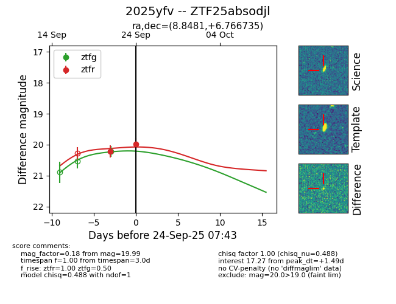
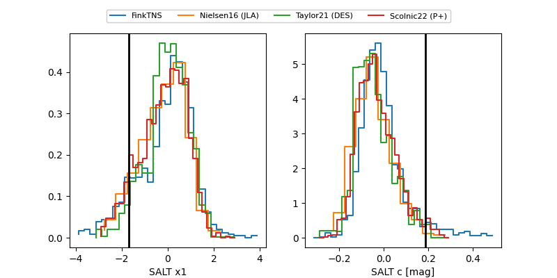

FINK: ZTF25absodjl
Lasair: ZTF25absodjl
ALeRCE: ZTF25absodjl
TNS: 2025yfv
YSE: 2025yfv
ZTF25absodjl (ztf,fink)
2025yfv (tns,yse)
equatorial (ra, dec) = (8.8481,+6.76673)
galactic (l, b) = (115.8174,-55.88321)


last ztfg=20.22, ztfr=19.99
1 ztfg, 2 ztfr detections